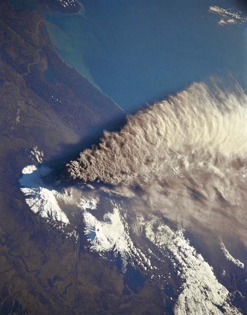
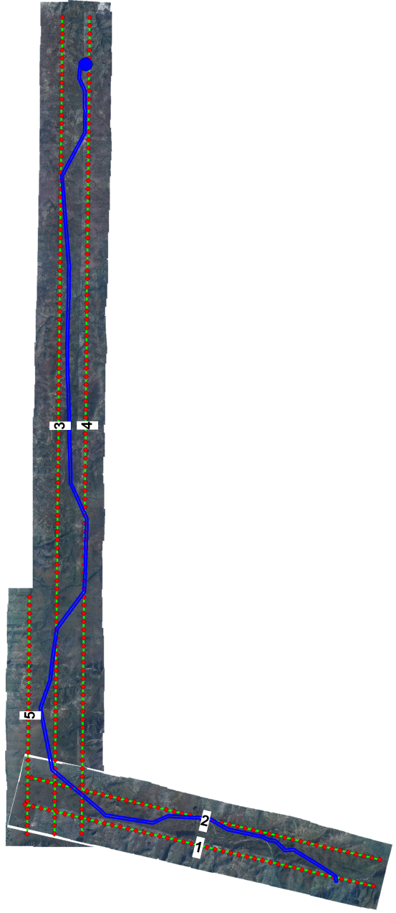
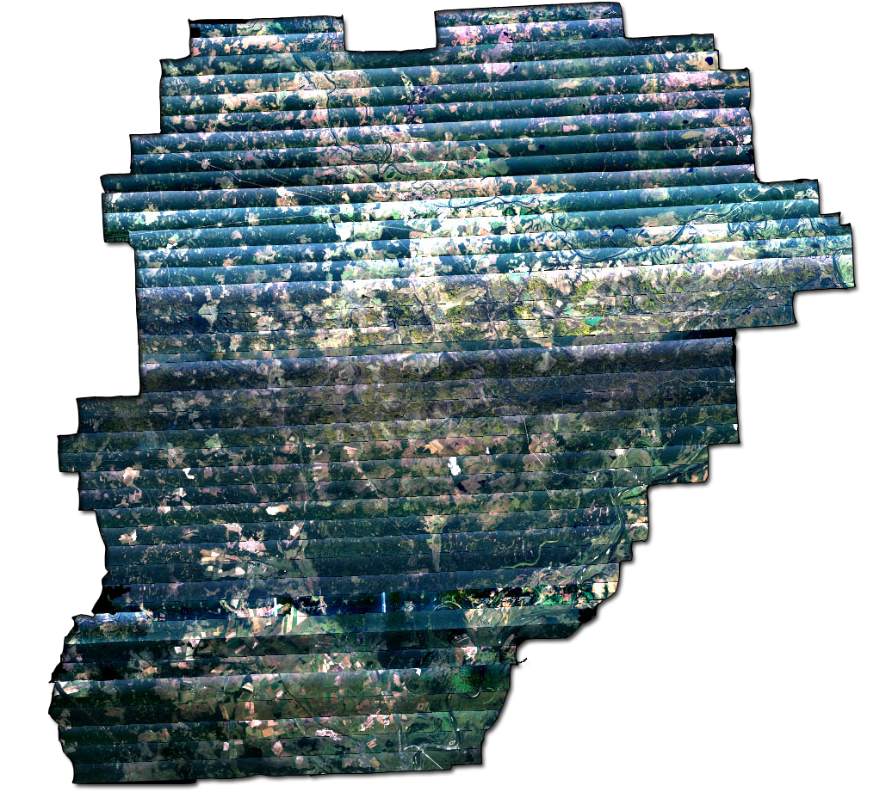
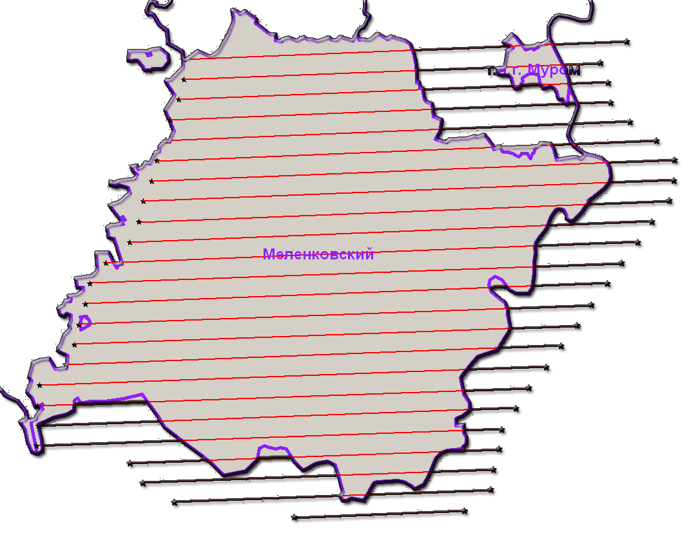
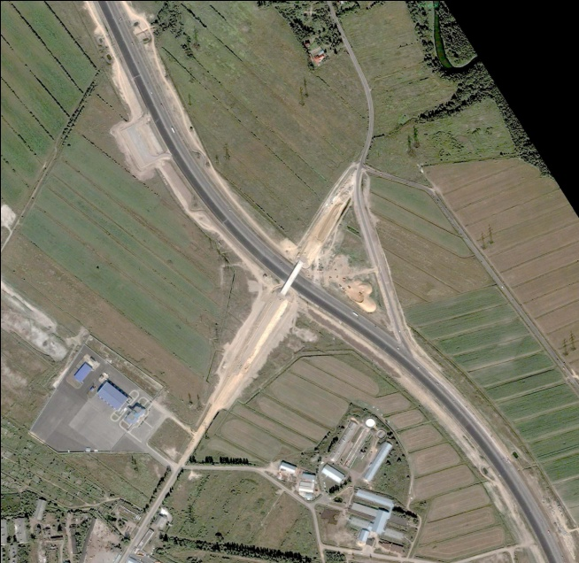
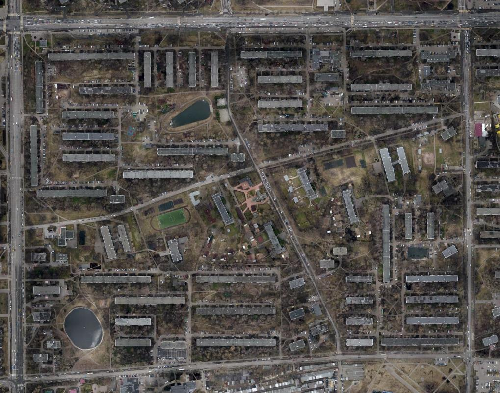
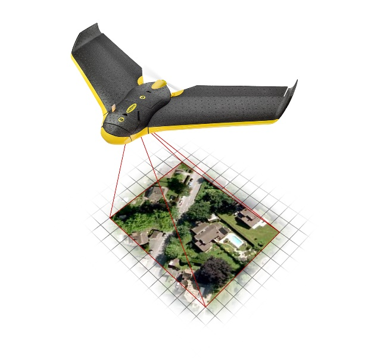
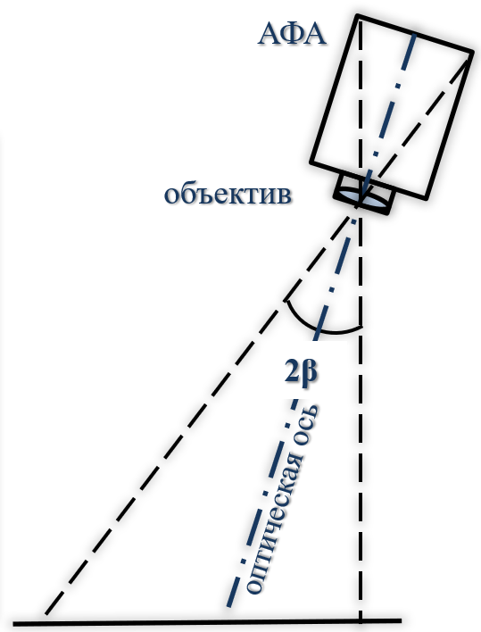
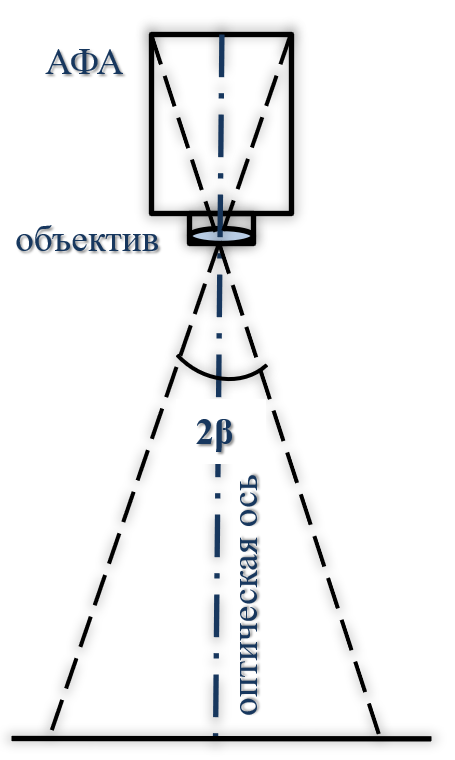
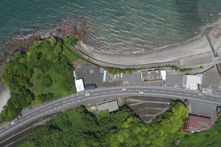

А02 · Классификация АФС стрелки · F полноэкран · N заметки · ? справка
Классификация АФС
Дрыга Данила Олегович
8 (916) 030 62 56
если есть инструкция,
значит от нее должна быть польза!
Классификация АФС
По количеству и расположению аэроснимков:
Одинарная – один или несколько снимков, не перекрывающиеся между собой
Маршрутная – выполняемая с одного захода, при котором производится несколько аэроснимков, взаимно перекрывающихся в направлении захода
Площадная – съёмка участка земной поверхности, превышающего по длине и ширине площадь, захватываемую одним аэроснимком.





Состоит из ряда параллельных маршрутов. Этим видом съемки покрывают большие территории. Обычно залеты имеют широтную ориентировку. Это наиболее часто используемый вид съемки.
Площадная съемка


Покрытие · интерактив
Классификация АФС
В зависимости от величины угла наклона оптической оси относительно надира (α):
Плановая - угол α≤3˚
Перспективная - угол α>3˚


Плановая съемка (надирная)
Оптическая ось АФА направлена в надир

Перспективная съемка
Оптическая ось АФА отклонена от надирной линии. Съемка производится под острым углом к горизонту. В современности используется для создания «видовых» фотографий, мониторинга и трехмерного моделирования